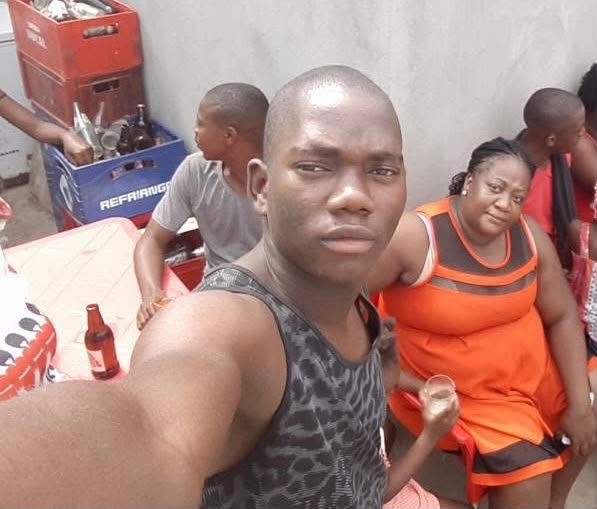

1. O Legado e a Sua Essência
Mirea foi, e para sempre será, um exemplo vivo de luz radiante, inteligência admirável e uma alegria verdadeiramente contagiosa. Filha amada de Cassino Pereira dos Santos e de Bernarda Augusto, ela trouxe para o mundo uma energia pura e acolhedora, capaz de iluminar a vida e o caminho de todos os que tiveram o privilégio imenso de a conhecer. Mulher de um coração sem tamanho e de uma alma nobre, a sua jornada terrena foi pautada pelo amor incondicional, pelo sacrifício próprio em prol dos seus e por uma generosidade sem limites que ultrapassava qualquer barreira.
2. Amor de Mãe: O Maior Sacrifício
Como mãe infinitamente dedicada da Evania e da Eliane, Mirea provou que o verdadeiro amor materno sabe colocar a felicidade e o bem-estar dos filhos acima de qualquer dor ou desejo pessoal. Diante das incertezas da vida e com uma bravura rara, tomou as decisões mais difíceis e altruístas para garantir que nada faltasse às suas filhas e que tivessem sempre as melhores oportunidades de futuro.
Mesmo à distância, o elo sagrado de amor jamais se quebrou. Mirea permaneceu sempre presente em cada gesto cuidadoso, em cada chamada recheada de carinho, em cada palavra de incentivo e em cada mimo que fazia questão de enviar com todo o seu afeto. O seu amor de mãe era uma força constante, protetora e inabalável — uma luz divina que continua a guiar com carinho os passos da Evania e da Eliane todos os dias.
As Suas Filhas Amadas:


Evania & Eliane
3. A Coluna Cervical da Família (Mãe, Pai e Protetora)
Enfrentando a dor profunda de perder os seus pais muito cedo, Mirea não se deixou vencer pelas adversidades. Assumiu com uma coragem e maturidade admiráveis o papel de grande pilar da família, tornando-se mãe, pai e porto seguro inabalável para os seus irmãos: Fefa, Nelinha e Delcinho.
Os Seus Irmãos:



Fefa, Nelinha & Delcinho
A sua capacidade extraordinária de amar expandiu-se ainda mais ao acolher e criar com dedicação os seus sobrinhos — Lelé, Darcio, Jaciane, Jucelho, Delmar, Adrieu e Noé —, exercendo com mestria, paciência e doçura as funções de mãe, pai e avó dedicada. Mirea construiu um verdadeiro refúgio de afeto, proteção e união para toda a família, ensinando a todos o valor inestimável da lealdade e do cuidado mútuo.
Os Seus Sobrinhos Amados:


Lelé, Darcio, Jaciane, Jucelho, Delmar, Adrieu & Noé
4. Memória Viva, Amor Eterno e Luz
Embora a doença tenha trazido dor e tirado a sua presença física tão precocemente do nosso convívio, a saudade jamais apagará a grandeza inspiradora da sua vida. Mirea partiu cercada por um mar de amor e gratidão, deixando para trás um legado eterno de dignidade, bondade pura, fé e resiliência.
Hoje, ao celebrar a sua passagem pela terra — e em especial a data do seu nascimento, a 29 de Outubro —, honramos a memória de uma mulher guerreira que viveu inteiramente para amar, servir e proteger os seus. A sua dor finalmente descansou no abraço da paz, mas a sua luz celestial, o seu sorriso marcante e a sua essência viverão eternamente no coração das suas filhas, dos seus irmãos, dos seus sobrinhos e de todos os que a amam.
✨ Para sempre amada. Para sempre lembrada. ✨